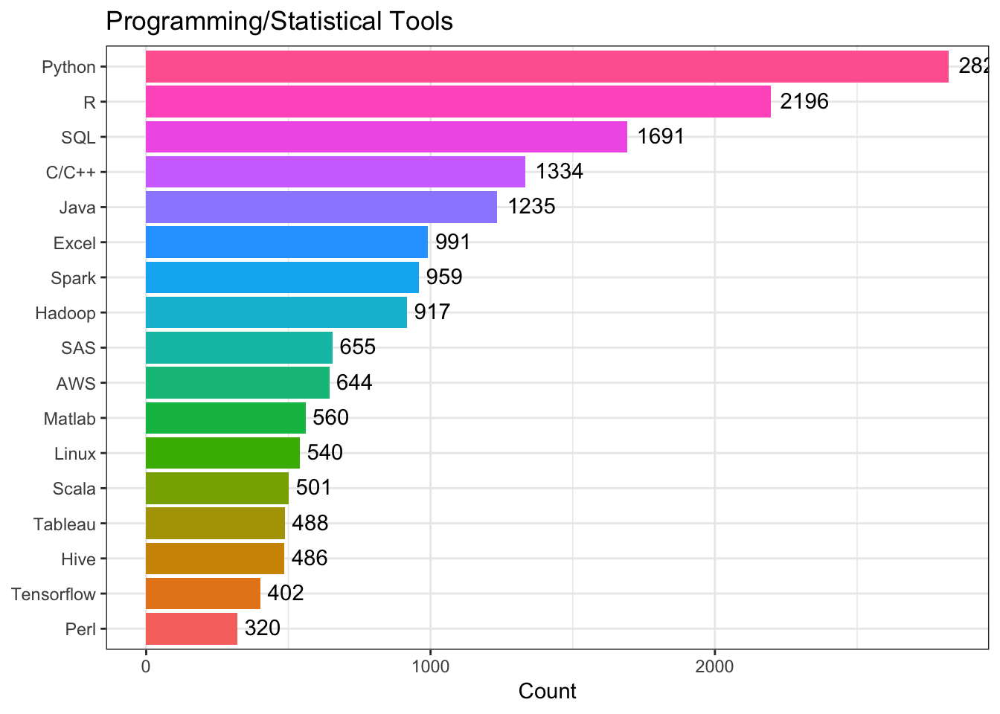
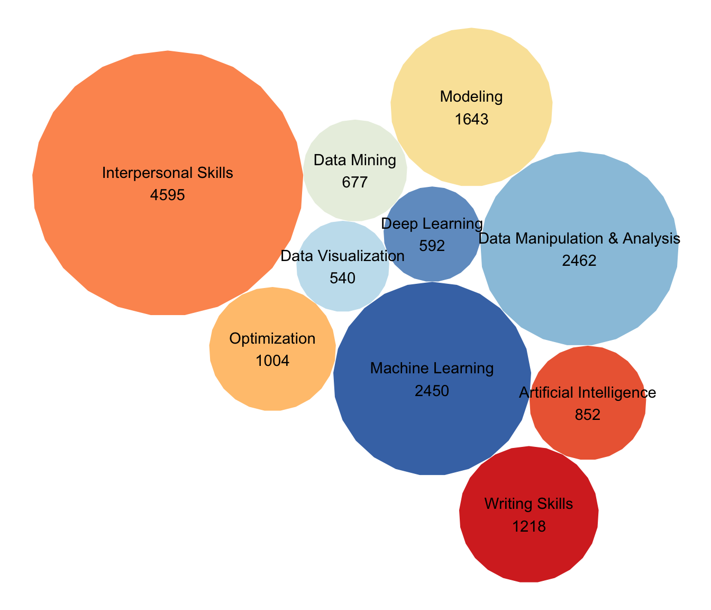
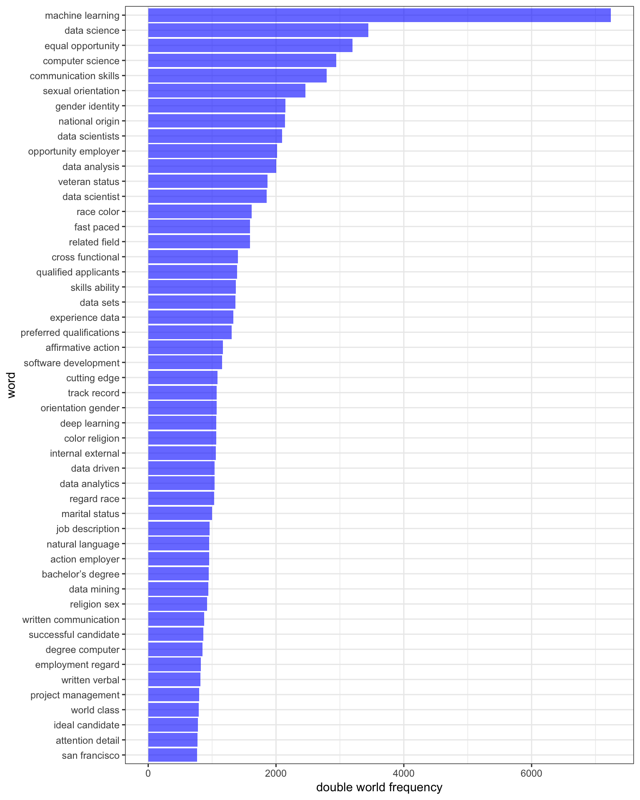

Text Mining
Indeed Data
Indeed data is scraped and cleaned by Shanshan Lu from Indeed website available on Kaggle). This dataset contains 7,000 data scientist jobs around the U.S. on August 3rd, 2018. Main variables include company Name, position name, location, job description, and number of reviews of the company. We primarily focus on the job description column that contains information about a short description of company, job functions, requirement and route of application. We combine the list of top 500 largest companies selected by Fortune magazine based on the ranking of total revenue from another dataset, then use this dataset to explore our interests.
Job Qualifications
which degree is prefered?
| degree | Fortune500 | non-Fortune500 | total |
|---|---|---|---|
| bachelor | 985 | 3304 | 4289 |
| master | 664 | 2194 | 2858 |
| phd | 347 | 1274 | 1621 |
| other | 174 | 1166 | 1340 |
| high_school | 57 | 66 | 123 |
Bachelor, master and phd are most often observed in total word count. Since this is simply a raw count of degree word frequency, we can only conclude that a job applicant with bachelor degree can meet the degree requirement of most positions but may not be sufficient enough to get one into the position.
what kind of knowledge background is desired?
The skills and toolset candidates are expected to bring into the position are paramount at the consideration of recruiters. Based on prior knowledge, we predefined the fields as Statistics, Computer Science(including machine learning), Mathematics, Quantitative, Biology, Data Science, Economics, Physics, Biostatistics, MBA, and Chemical Engineering.
Statistics, mathematics, computer science and quantitative take up almost two-thirds of the entire square panel. These words are at the root heart of this data science orientated field. However, the word “data science” does not appear as frequently as it might be supposed to be.
which tools and skills are needed?

The most required programming tool in job posts are Python, R, and SQL. Excel, followed by Tableau and SQL favored by non-fortune 500 corporations, while fortune 500 corporations prefer applicants with Perl, C/C++, and Java.

On the skill perspective, interpersonal skills are most frequently mentioned across job postings, followed by skills of data manipulation & analysis, machine learning and modeling. Non-fortune 500 put more weights on writing skills, data visualization, and data manipulation & analysis, while fortune 500 corporations emphasize data mining, machine learning, artificial intelligence, deep learning, and modeling.
Findings via Text Analysis
Given that we have nearly 7000 full job descriptions posted on Indeed by employers, we aspire to explore and visualize the most commonly used words across these descriptions. As we expected, degree requirements, related background, working ethics and culture in the company might show up at the top of the list.
We started with word counts using window size 2 and displayed top 50 words below. The single word mining does not provide any informative message in its own right because of its lack of context. Our realizations will get more intriguing as we gradually leverage window size because words will start making sense when they become at least a phrase.

Here we see popular terms such as machine learning, data science, equal opportunity, computer science, and communication skills towards the end! These top 50 phrases generally can be categorized as software tools, interpersonal skills, and sociodemographic status information like gender identity and veterans status.
Then we display the result of windown size 3 since window size 4 realization does not adds additonal information.

Most of the information standing out here is about sexual orientation, gender identity, and equal employment. The most frequent phrases are not related technical skills or any qualifications, but statements of equal opportunity employers, sexual orientation, race and religion. We also see phrases like computer science degree, machine learning techniques. From here we conclude that companies take equal consideration of candidates seriously in addition to the applicants’ qualified backgrounds.